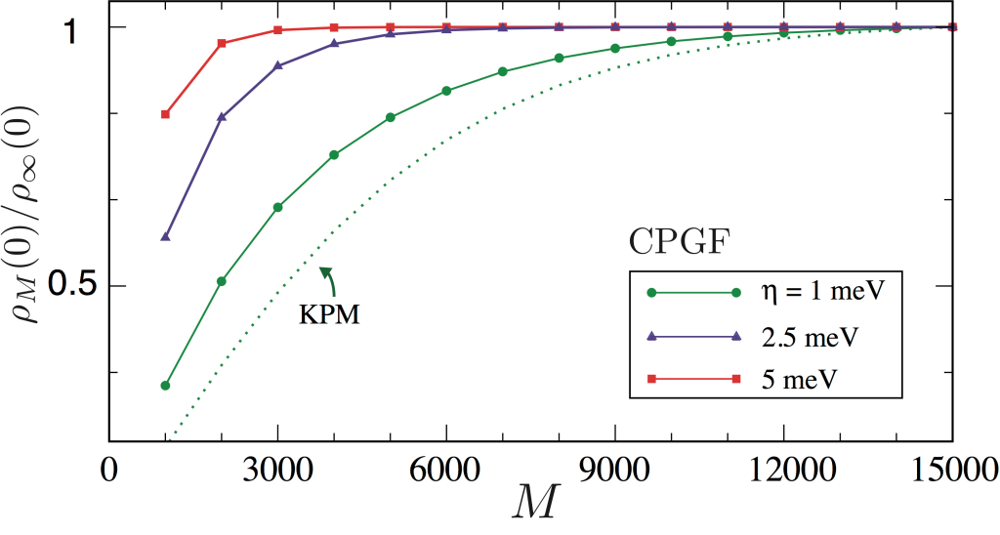

Spectral Methods
The physical properties of condensed matter systems are encoded in the eigenvalues and eigenfunctions of Hamiltonian matrices \(\hat{H}\) with typically very large dimension \(D\). These systems are thus challenging to investigate using exact diagonalization (due to the exponential scaling of computer resources with the system size), but a wide range of many-body methods and approximations are available that can help us to understand particular aspects of certain systems and even predict new phenomena. In particular, spectral methods have recently become popular for enabling the reconstruction of key physical quantities and observables in an unbiased, numerically exact fashion at a fraction of the computational cost of exact diagonalization methods. In the spectral approach, the quantity of interest (target function) is decomposed into a spectral series
where \(P_n(x)\) are orthogonal polynomials (basis functions) and \(x\) is the argument, such as the Fermi energy or frequency. The elegance and power of spectral decompositions such as Eq. \((1)\) lie in the fact that the expansion moments \(f_n\) can be obtained by means of a highly-efficient and stable recursive scheme. Once these moments are determined (to some desired precision), the target function \(f(x)\) can be easily and quickly reconstructed over the desired range of \(x\).
For example, consider the Chebyshev polynomials of the first kind:
which are basis functions widely used to approximate generic (non-periodic) functions defined on finite intervals given their unique convergence properties and close relation to the Fourier transform1. It is easy to verify that the Chebyshev polynomials of first kind satisfy the orthogonality relations:
and thus form a complete set on \(\mathcal{L}\).
The orthogonality relations \((3)\) allow us to define the numerically convenient spectral decomposition
where \(\mu_n\) are the so-called Chebyshev moments defined as the overlaps \(\mu_n = \int_\mathcal{L} dx f(x) T_n(x)\).
The extension of these concepts to operators (matrices) allows full quantum-mechanical calculations of lattice models to be carried out for extremely large systems bypassing direct diagonalization. For example, the Chebyshev expansion of the familiar spectral operator, \(\delta(E−\hat{H})\), at the heart of many calculations in condensed matter physics is given by2:
where \(||\hat{H}|| \leq 1\) has been re-scaled to guarantee that its spectrum falls into the spectral interval \(E \in [−1:1]\). In the above, the operators \(T_n(\hat{H})\) are defined by the matrix version of the standard Chebyshev recursion relations
A spectral decomposition into Chebyshev polynomials \((4)\) allows straightforward determination of several important quantities, for example, the density of states (DoS):
where \(M\) is the Chebyshev (truncation) order that controls the accuracy of the spectral expansion (see below). The Chebyshev moments are easily seen to be determined by traces of the matrix Chebyshev operators according to \(\mu_{n}=\text{Tr}\,[T_{n}(\hat{H})]/\chi_{n}\) with \(\chi_n=[D\left(1+\delta_{n, 0}\right)] / 2\). Clearly, the knowledge of the Chebyshev moments, \(\{\mu_n\}\) (\(n=0,1,...\)), allows us to reconstruct the DoS over any desired grid of energies (the so-called post-processing stage).
We will now discuss how to efficiently compute \(\{\mu_n\}\). Chebyshev moments are typically evaluated recursively in two steps (note that \(\mu_0=1\) by definition). First, a series of matrix-vector multiplications is carried out to construct the Chebyshev matrix polynomials using Eq. \((6)\). The iteration process usually starts with the application of \(\mathcal{T}_{1}(\hat{H})=\hat{H}\) onto some basis vector (or a random vector, see the STE part below) \(|r_1\rangle\), yielding \(\hat{H} |r_1\rangle= |\tilde r_1 \rangle\). This then allows us to compute the first non-trivial Chebyshev moment, \(\mu_1\), as detailed below. The process is iterated via \((6)\) to compute subsequent moments, \(\mu_2\), \(\mu_3\), etc. In practice, the iterative procedure is terminated once the desired energy resolution has been achieved, and, as such, for some problems, the number of Chebyshev moments \(M\) required can be quite large.
For typical sparse Hamiltonian matrices, the algorithmic complexity of each Chebyshev step scales favourably as \(Z \times D\), where \(Z\) is the lattice coordination. Efficient numerical implementations of the spectral method, such as those within KITE, evaluate these moments "on-the-fly" exploiting both the sparseness of real-space lattice models and the stability of the Chebyshev recursive procedure \((1)\) (which does not suffer from loss of orthogonality or other numerical instabilities commonly found in other iterative methods). Moreover, Chebyshev expansions benefit from a uniform resolution due to errors being distributed uniformly on \(\mathcal{L}\)1. In principle, the spectral resolution is only limited by the number of moments retained in the expansion. As a rule of thumb, the resolution is inversely proportional to the number of moments used. For functions of \(E\) (such as the DoS), this results into \(\delta E \propto \Delta / M\), where \(\Delta\) is the original spectrum bandwidth (prior to re-scaling).
It is well known that truncated spectral representations often present spurious features known as Gibbs oscillations (Fourier expansions) and Runge phenomenon (polynomial expansions). A well-known example is the "ringing artifact" in the Fourier expansion of a square wave signal. Gibbs oscillations can be cured using specialized filtering techniques. An increasingly popular approach in quantum chemistry and computational condensed matter physics is the kernel polynomial method (KPM)2. As its name suggests, the KPM makes use of convolutions with a kernel to attenuate the Gibbs oscillations, e.g., for the DOS, \(\mu_n \rightarrow \mu_n \times g_n\). A proper kernel \(g_n\) must satisfy specific criteria to guarantee that the approximate function \(f_M(x)\) converges to the target function \(f(x)\) uniformly as \(M \rightarrow \infty\). A typical example is the Lorentz kernel, \(g^L_n = \sinh(\lambda(1−n/M))/\sinh(\lambda)\), where \(\lambda\) is an adjustable parameter. It has the property that approximates nascent Dirac-delta functions \(\delta_\eta(x)\) by a Lorentzian with resolution \(\eta = \lambda / M\), and thus has been employed to damp Gibbs oscillations in spectral decomposition of broadened Green's functions2.
A powerful alternative is given by the Chebyshev polynomial Green's function (CPGF) method3, which is based on the following exact spectral decomposition of the lattice resolvent operator:
Differently from the KPM, the spectral coefficients now depend on the energy. The energy resolution \(\eta\) also enters directly into these
coefficients, which allows us to set the target resolution from the outset of the calculation.
Also, being an exact asymptotic expansion, the convergence of the \(M\)th-order approximation to \(G(E)\) to a given accuracy
is guaranteed provided \(M\) is large enough.
The figure below shows the convergence of the DOS at the band center \(E = 0\) of a giant honeycomb lattice with 3.6 billion sites and dilute random defects (vacancies).
The CPGF method is seen to converge significantly faster than the KPM. More importantly,
the CPGF expansion converges asymptotically at all energies (by contrast, the Lorentz kernel may lead to small errors away from the band centre).

Convergence of \(M\)-order approximation to the DOS at the band center of a giant honeycomb lattice with
\(60000 \times 60000\) sites and vacancy defect concentration of 0.4% at selected values of energy resolution.
As a guide to the eye, we plot the DOS normalized to its converged value (to 0.1% accuracy).
As comparison, the DOS obtained from a KPM expansion with a Lorentz kernel is shown (with effective resolution \(\eta=1\) meV).
The number of required moments \(M\) increases quickly as electronic states are probed with finer energy resolutions.
This poses difficulties when evaluating more complex quantities, such as linear response functions given by products of two Green functions (e.g., longitudinal conductivity4),
especially at finite temperature/frequency (where off-Fermi surface processes are relevant)5 or when the system approaches a quantum phase transition3.
To overcome the above challenge, KITE integrates a number of state-of-the-art algorithms. An example is KITE's large-scale single-shot algorithm for direct evaluation of zero-temperature DC response functions at fixed Fermi energy. The algorithm bypasses the expensive recursive calculation of moments and thus can treat giant systems (\(N \propto 10^{10}\)) with fine resolution (\(M\) up to hundreds thousands). It can be applied to other quantities, such as DOS, local DOS and quasiparticle self-energy; a detailed description is given in Refs.3 and 6. Moreover, a Chebyshev-moment approach to the Kubo-Bastin formula developed in5 gives access to finite temperature response functions of large systems up to ten millions of orbitals (with \(M\) up to tens thousands3); a detailed description of the algorithm is given in Ref.5 and its large-scale implementation in Ref.3. Recent developments, which integrate spectral and domain-and-conquer methods to further boost the efficiency of real-space simulations of Kubo formulas, have paved the way to yet larger systems and finer energy resolutions 7.
To speed up the evaluation of the \(n\)-body trace operation \(\operatorname{Tr}\{T_n(\hat{H})...T_m(\hat{H})\}\) (in the DOS example above, \(\operatorname{Tr}\{T_n(\hat{H})\}\)), KITE implements the stochastic trace evaluation technique (STE)2:
with random vectors \(|r\rangle=\sum_{i=1}^{D} \chi_{r, i}|i\rangle\). Here, \(\{|i\rangle\}\) (\(i=1,...,D\)) are a complete orthonormal basis set of the lattice model (typically position kets). The random variables \(\chi_{r,i}\) can be real- or complex-valued and fulfill "white noise" statistics: \(\left\langle\left\langle\chi_{r, i}\right\rangle\right\rangle=0, \quad\left\langle\left\langle\chi_{r, i} \chi_{r^{\prime}, i^{\prime}}\right\rangle\right\rangle=0\) and \(\left\langle\left\langle\chi_{r, i}^{*} \chi_{r^{\prime}, i^{\prime}}\right\rangle\right\rangle=\delta_{r, r^{\prime}} \delta_{i, i^{\prime}}\). The STE is extremely accurate for sparse matrices of large dimension (only a few random vectors are needed to converge to many decimal places), which allows substantial savings in computational time. For example, the evaluation of Chebyshev moments of the DOS function for a tight-binding model (where \(D=N\), and \(N\) is the total number of orbitals or sites in the lattice) requires a total number of operations scaling as
The required number of random vectors, \(R\), depends on sparsity of the Chebyshev polynomial matrices \(T_n(\hat{H})\). For typical tight-binding problems, one has \(Z \propto O(1)\). Thus, in the large system limit \((N \gg 1)\), a single random vector is often enough to achieve accuracy of 1% or better3. In fact, for sparse matrices, the STE relative error has the favorable scaling \(1 / \sqrt{R N}\). On the other hand, the number of moments required to converge the expansion depends strongly on the desired resolution, \(\eta\). As a rule of thumb, \(M\) should not be smaller than a few times the linear dimension of the system \(N^{1/d}\), where \(d\) is the number of spatial dimensions, which then leads to:
allowing a significant reduction in computational time w.r.t. direct diagonalization techniques, especially in \(d \geq 2\).
-
Chebyshev and Fourier spectral methods, John P. Boyd, 2nd Ed. Dover 5, New York (2001). ↩↩
-
Kernel polynomial method, Alexander Weiße, Gerhard Wellein, Andreas Alvermann, and Holger Fehske. Rev. Mod. Phys. 78, 275 (2006). ↩↩↩↩
-
Critical delocalization of chiral zero energy modes in graphene, A. Ferreira and E. Mucciolo, Phys. Rev. Lett. 115, 106601 (2015). ↩↩↩↩↩↩
-
Unified description of the dc conductivity of monolayer and bilayer graphene at finite densities based on resonant scatterers, A. Ferreira et al., Phys. Rev. B 83, 165402 (2011). ↩
-
Real-Space calculation of the conductivity tensor for disordered topological matter, J. H. García, L. Covaci, and T. G. Rappoport, Phys. Rev. Lett. 114, 116602 (2015). ↩↩↩
-
High-resolution real-space evaluation of the self-energy operator of disordered lattices: Gade singularity, spin–orbit effects and p-wave superconductivity, S M João, J. M. Viana Parente Lopes, and A. Ferreira, J. Phys. Mater. 5 045002 (2022). ↩
-
Fast Fourier-Chebyshev approach to real-space simulations of the Kubo Formula, S. G. de Castro, J. M. V. P. Lopes, A. Ferreira, and D. A. Bahamon, Phys. Rev. Lett. 132, 076302 (2024) ↩